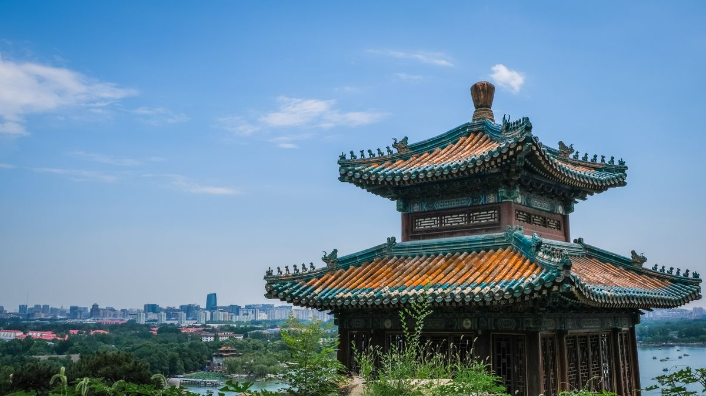
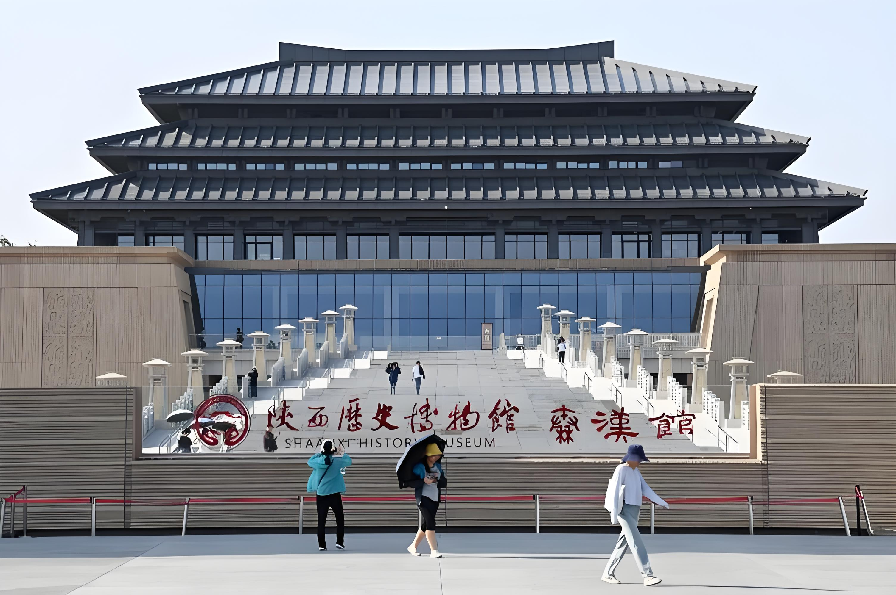
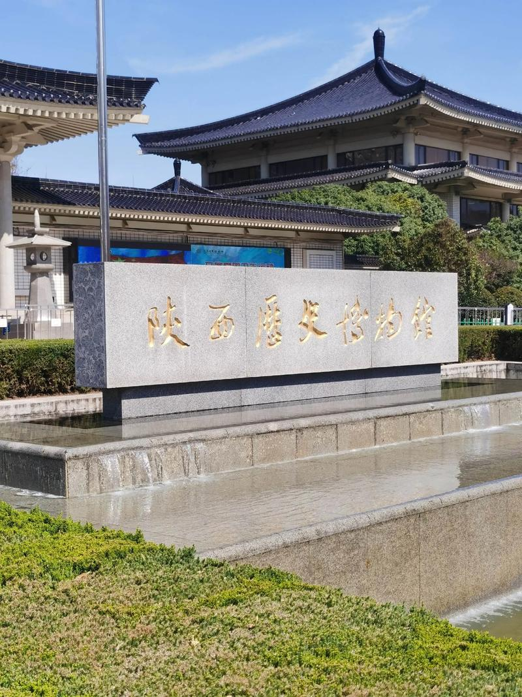
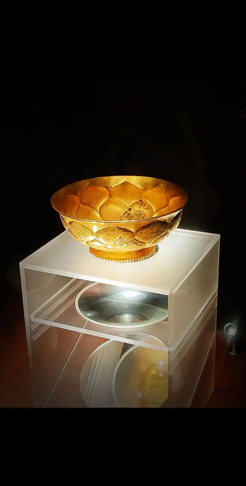
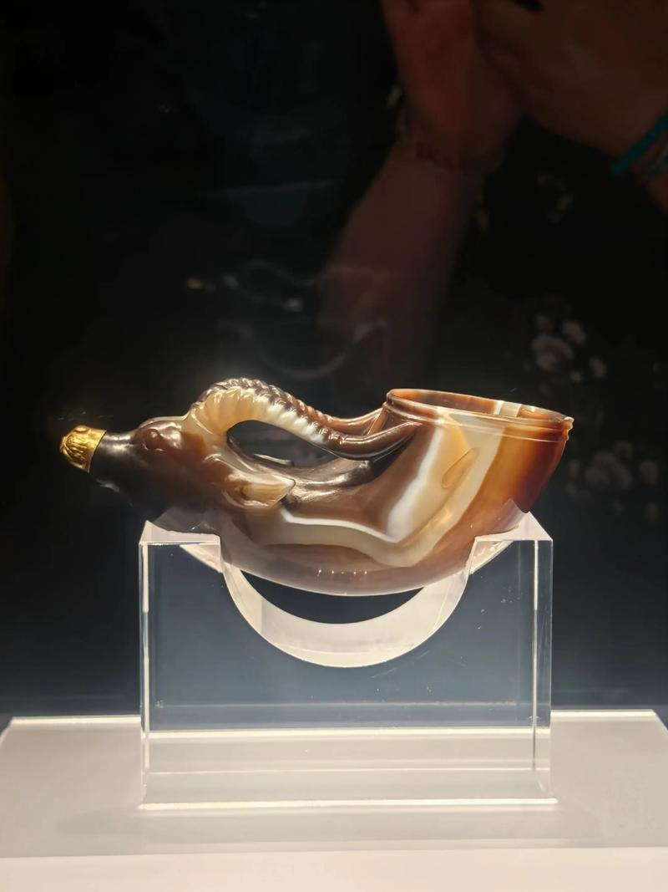
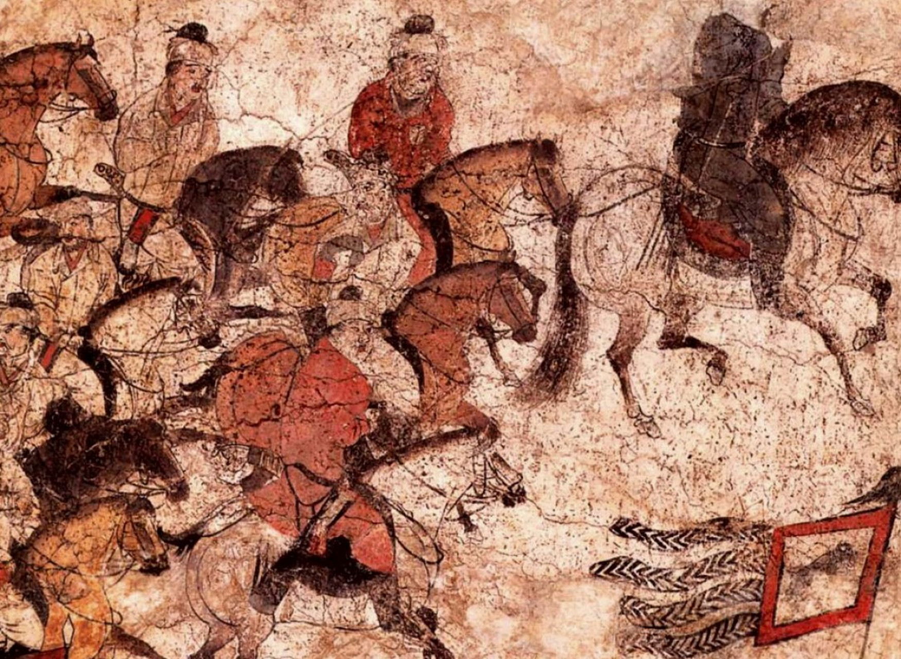

陕西历史博物馆是中国第一座大型现代化国家级博物馆，被誉为"古都明珠，华夏宝库"。馆藏文物上起距今约115万年前的蓝田猿人，下至1840年鸦片战争，时间跨度长达一百多万年。其中商周青铜器、历代陶俑、汉唐金银器、唐墓壁画最具特色，全面系统地展示了以周、秦、汉、唐为代表的陕西古代文明。
博物馆建筑由中国工程院院士、建筑大师张锦秋设计，整体为仿唐风格，以"中央殿堂、四隅崇楼"的布局体现了唐代建筑"轴线对称、主从有序"的美学。灰白色的主体色调取自唐代宫殿的"素面朝天"，沉稳庄重，被誉为中国博物馆建筑的经典之作。

在171万余件藏品中，有18件（组）被定为国宝级文物。其中最著名的"鎏金银竹节铜熏炉"（西汉）工艺精绝，炉盖透雕山峦云雾，使用时香烟从山峦间隙中袅袅升起，宛如仙境。"镶金兽首玛瑙杯"（唐代）是至今所见唐代唯一一件俏色玉雕，以一块罕见的缠丝玛瑙雕琢而成，羚羊首造型带有鲜明的中亚风格，是丝绸之路文化交流的绝好物证。
"皇后之玺"玉印（西汉）以和田羊脂白玉雕成，螭虎钮，是目前发现的唯一一枚汉代皇后玉玺，极有可能就是吕后之印。此外，"五祀卫鼎"（西周）、"鸳鸯莲瓣纹金碗"（唐代）、"阙楼仪仗图"壁画等，每一件都堪称国宝级别的艺术珍品。
博物馆基本陈列"陕西古代文明"分为三个展厅、七个单元：从《人猿揖别》的史前时期，到《赫赫宗周》的西周礼乐文明，再到《东方帝国》的秦统一，《大汉雄风》的两汉，《冲突融合》的魏晋南北朝，《盛唐气象》的唐，以及《告别帝都》的唐以后。漫步其中，宛如穿越了一条从115万年前到19世纪的时空隧道。
唐代壁画珍品馆收藏了近600幅唐墓壁画，面积超过一千平方米。其中包括举世闻名的章怀太子墓《客使图》《马球图》、懿德太子墓《阙楼仪仗图》等，是研究唐代社会生活的第一手图像史料。




| 地址 | 西安市雁塔区小寨东路91号 |
|---|---|
| 开放时间 | 09:00 — 17:30（旺季）；09:00 — 16:30（淡季）；周一闭馆 |
| 门票 | 基本陈列免费（需提前预约）；唐代壁画珍品馆 270 元 |
| 交通 | 地铁 2 号线 / 3 号线小寨站 D 口出，步行约8分钟 |
| 小贴士 | 务必提前在微信公众号预约（每天限额），节假日极为抢手；建议预留至少3小时；语音导览器或人工讲解强烈推荐，文物背后的故事比文物本身更精彩 |